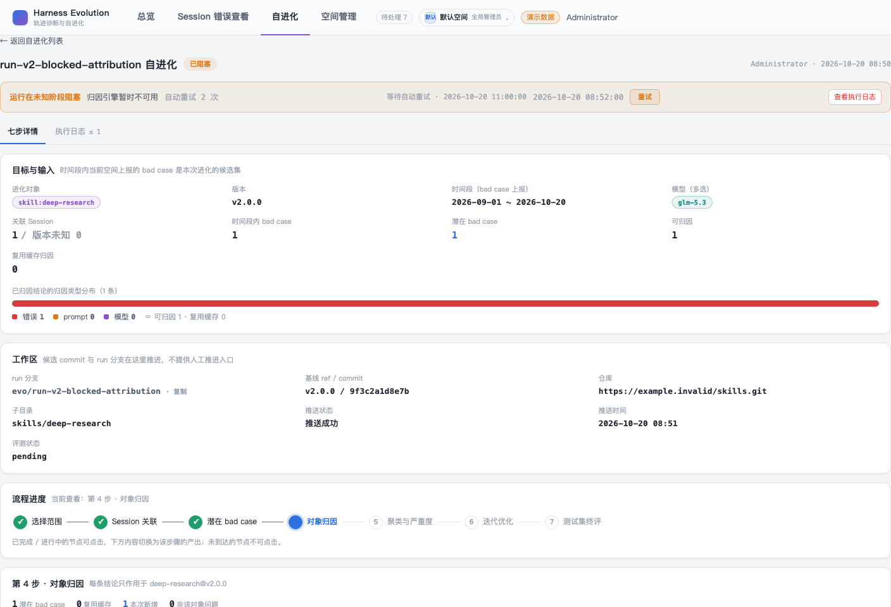
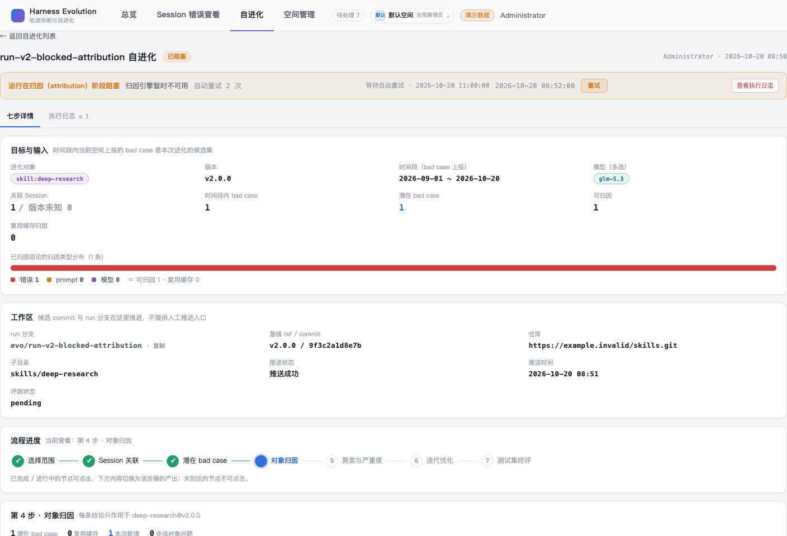
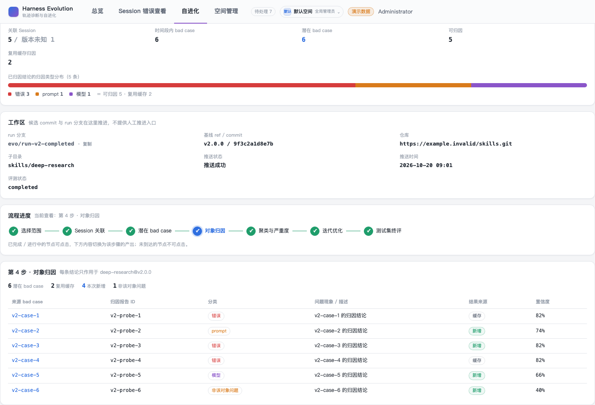
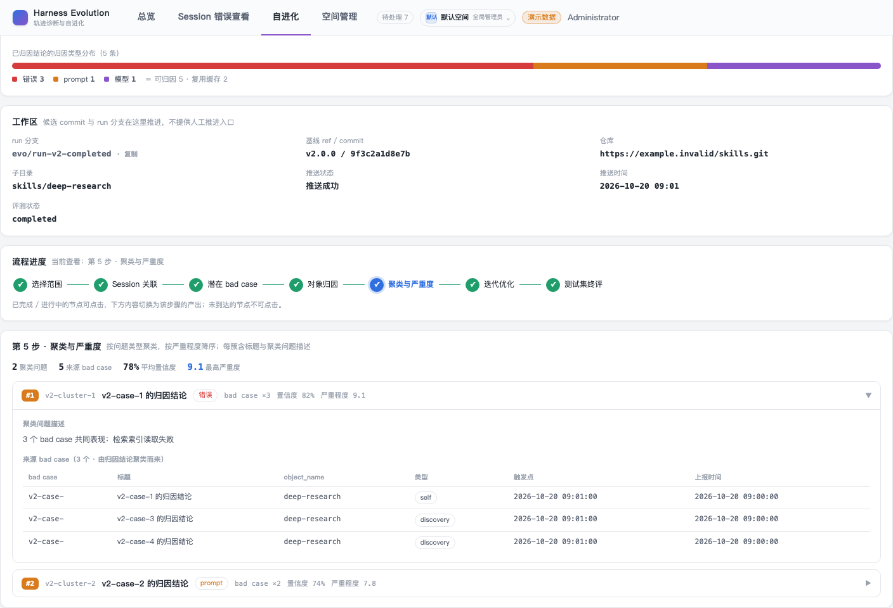
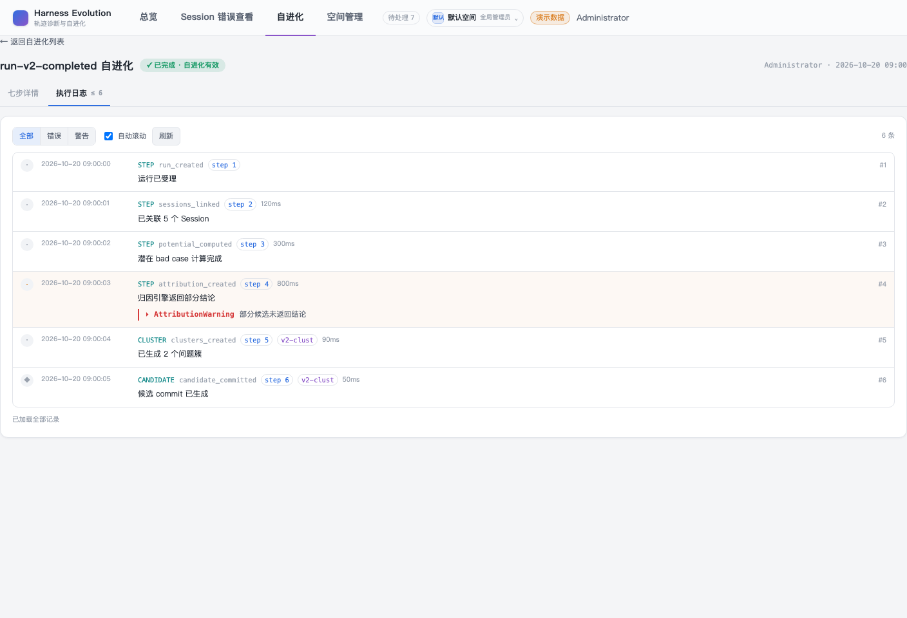

- Branch
- agent/develop-m10-06-9156edcd5b40
- Fixture runs
- run-v2-completed / run-v2-blocked-attribution / run-v2-legacy
- Data
- V2 candidates + probes + clusters + turns + events；SQLite
- Browser
- Headless Chrome，1408×960，桌面主题
Harness Evolution · M10-06
M10-06 七步运行详情 GUI 冒烟报告
真实浏览器经 Web → Vite proxy → FastAPI → SQLite，验证新 V2 run 与历史 legacy run 的七步详情、Session/潜在大 case 分页、cached/fresh/non_target 归因、按 severity 降序的簇与首簇展开、blocked attribution 的自动/人工重试、未到达 step 不发请求，以及执行日志到 step/cluster/error 的联动。全部场景通过；基线 blocked attribution 显示“未知阶段”的文案缺口已修复。
6冒烟场景
6/6PASS
0未解决缺陷
5关键截图
Environment and Artifact
2026-11-17 · Asia/Shanghai · 1408×960 · Chromium headlessScenario Matrix
5 pass · 1 fixed| # | 场景 | 结果 | 细节 | 证据 |
|---|---|---|---|---|
| 01 | V2 完成 run 的七步导航与会话分页 | PASS | 7 个 step 全部 done；Session 4 条/页，第 2 页 1 条；默认选中 final。 | 01-after-sessions.png |
| 02 | 潜在 bad case 分页与命中原因 | PASS | 5 条/页；第 2 页为第 6 条；orderState=unknown 显示“触发点顺序待轨迹时间戳重放”。 | 02-after-potential.png |
| 03 | 归因来源与 non_target | PASS | summary 四数为 6/2/4/1；cached/fresh 标签正确；category=null 显示为非该对象问题。 | 03-after-attribution.png |
| 04 | 聚类 severity 排序、首簇展开、non_target 不进簇 | PASS | 第 1 簇 severity 9.1 默认展开；第 2 簇 7.8 折叠；v2-case-6（non_target）只出现在 Step 4。 | 04-after-clusters.png |
| 05 | blocked attribution 自动/人工重试 | FIXED | 基线显示“运行在未知阶段阻塞”；修复后显示“归因（attribution）阶段阻塞”，并展示自动重试 2 次、下一次重试时间与“重试”按钮。 | before-06-blocked-attribution.png 06-after-blocked-attribution.png |
| 06 | 执行日志 step/cluster/error 联动与未到达 step 不请求 | PASS | 事件跳转 step、跳转并高亮簇、展开脱敏错误详情；blocked attribution 只请求 attribution step，未请求 clusters/iteration/final。 | 05-after-logs.png |
Issues and Observations
P2 blocked attribution 阶段显示为“未知阶段”blocked attribution 阶段显示为“未知阶段”
- Actual
- 基线 banner 显示“运行在未知阶段阻塞”。
- Expected
- 显示“运行在归因（attribution）阶段阻塞”。
- Fix
- RunDetail 的 blockedStageLabel 增加 attribution 分支，并补充组件测试与真实浏览器回归。
Fixed · branch head
Evidence
5 screenshots




Automated Coverage Assessment
5 areas reviewed| 范围 | 自动化覆盖 | 结论 | 建议 |
|---|---|---|---|
| 七步状态与未到达 step | UT + E2E | 组件测试断言只请求 range；mock 断言 preparing 只发 range；E2E 断言 blocked 只发 attribution。 | 保持后端口径。 |
| Session/潜在分页 | UT + E2E | E2E 覆盖 4/5 条每页与第 2 页内容。 | 服务端分页参数变更时同步 E2E。 |
| 归因来源与 non_target | UT + E2E | UT 覆盖 cached/fresh 与非该对象问题；E2E 覆盖 non_target 不进簇。 | 聚类算法升级时保留该断言。 |
| blocked attribution 重试 | UT + E2E | UT 覆盖阶段文案、自动重试与人工按钮；E2E 覆盖真实 run。 | 新增 blocked stage 时同步文案与测试。 |
| 执行日志联动 | UT + E2E | UT 覆盖 step/cluster 跳转；E2E 覆盖真实事件与错误详情。 | 新增事件坐标时复用现有跳转。 |
Conclusion
Ready for review六个场景全部通过；发现的 blocked attribution 文案缺口已修复并在基线/修复后截图中对照。
- 与 prototype 的差异属于设计口径：Step 2 不展示“对象出现”列，Step 4 使用 05 §3.6 的四数统计，符合 08 §10 / 05 §3.6。
- 截图与报告不进入 PR 分支；证据放在独立 evidence 分支，PR 只链接。
- 合并由人工完成（本环境没有授权的 merge CLI）。
Harness Evolution · M10-06 · 证据由真实 Web/API/SQLite 链路的 headless Chrome 生成